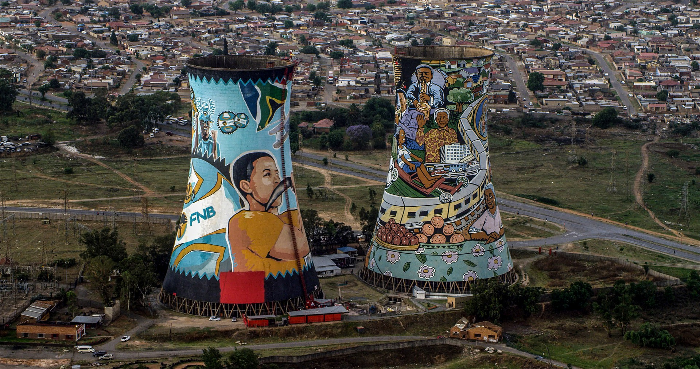
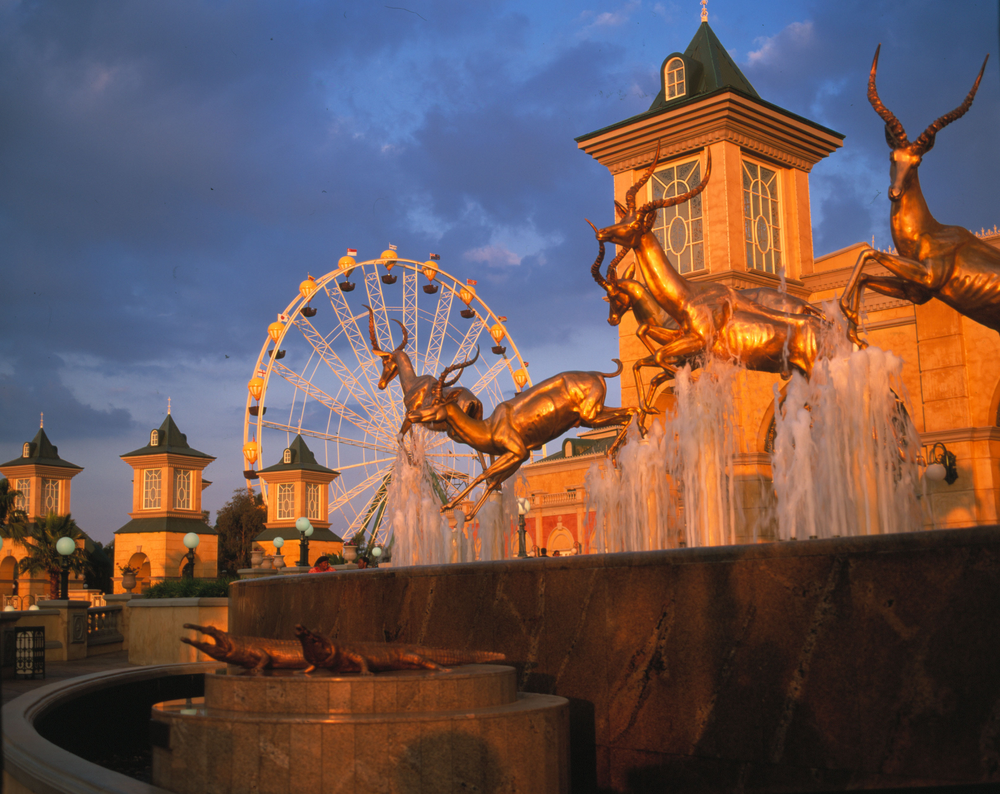

Bali, Indonesia

Bali is filled with culture, nature, art, and the spiritual.
From the spectacular beaches of Kuta and the likes which offers hours of swimming, surfing and sunbathing,
to the cultural area of Ubud known for its picturesque rice terraces.
This City offers a Get away from the crowds, visiting the northern and eastern coasts where hidden waterfalls wait to be discovered.
Bali's west coast has tapering ranges of mountains covered in lush forests, rice fields, and bountiful vegetation.
The island also has hundreds of historical sites that have stood the tests of time.
From royal palaces to holy temples, where one can gets to see a different glimpse of Bali at these exotic spots.
Foreigh Language
Etiam varius ac purus nec euismod. Mauris accumsan odio tellus, vitae faucibus
est egestas in. Nullam
tincidunt congue metus ut blandit. Vivamus sit amet ullamcorper sem. Sed aliquam, est sed mattis lobortis,
neque enim molestie arcu, at tempor enim elit et enim.
| English |
Afrikaans |
| Zulu |
Tswana |
| DoXhisae |
Jason |
| Venda |
Sotho |
CONSTITUTION HILL
Constitution Hill in Braamfontein Johannesburg, is home to South Africas Constitutional Court and also the site of the notorious Old Fort Prison Complex, known as Number Four.
It was here that thousands of people were brutally punished before the onset of democracy in 1994.
SOWETO
To truly understand South Africas turbulent past, one must visit Soweto. Here you will be shown the bullets in the walls of the Regina
Mundi Church and the Freedom Charter will be explained to you and you can muse on the young life of Hector Peterson at the very spot where he was shot.
Nelson Mandela's humble little house in Orlando West, Soweto, now called the Mandela Family Museum, is an interesting stopover for those keen to expereince a slice of authentic history on the world's most famous former prisoner.

REEF CITY
Gold Reef City in Johannesburg offers experiences that the visitor would not find anywhere else.
Step back in time with Gold Reef City Casino Hotel and Theme Park to experience gaming, fun, fantasy and historical fact.
The complex is made up of theme park, Apartheid museum and casino facilities. Visitors savour the offering of traditional African music, dance and history found throughout the complex.
